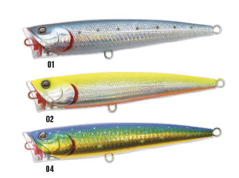

Il peso, la forma ed il disegno di questo artificiale per la pesca in mare consentono da un lato di lanciare a grandi distanze e dall’altro di operare perfettamente in superficie. Un cavetto metallico che attraversa l’artificiale longitudinalmente lo rende più resistente ed efficace.
